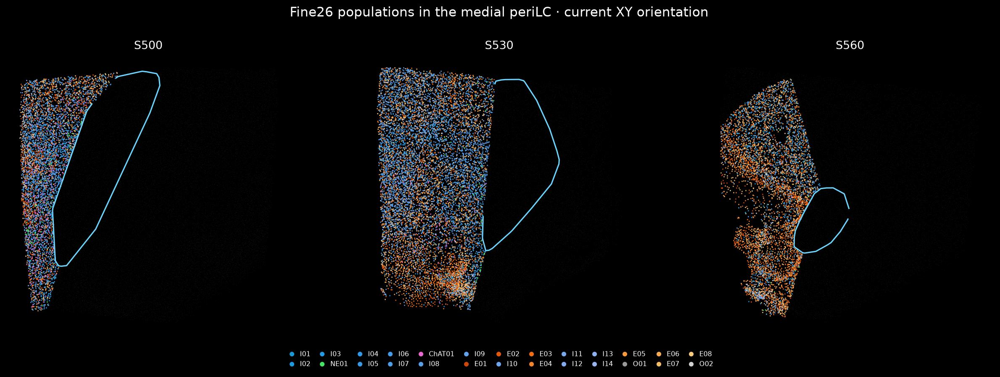
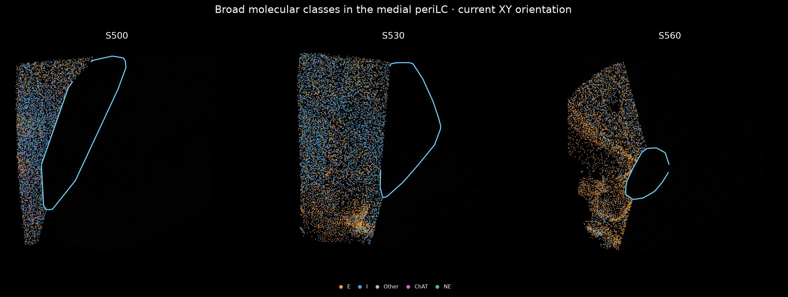
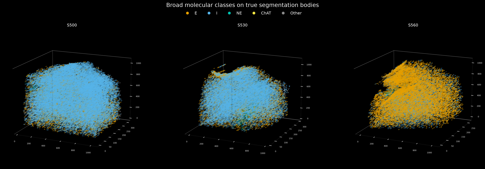
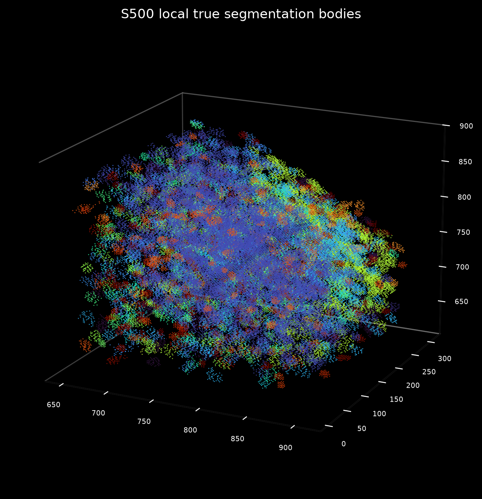
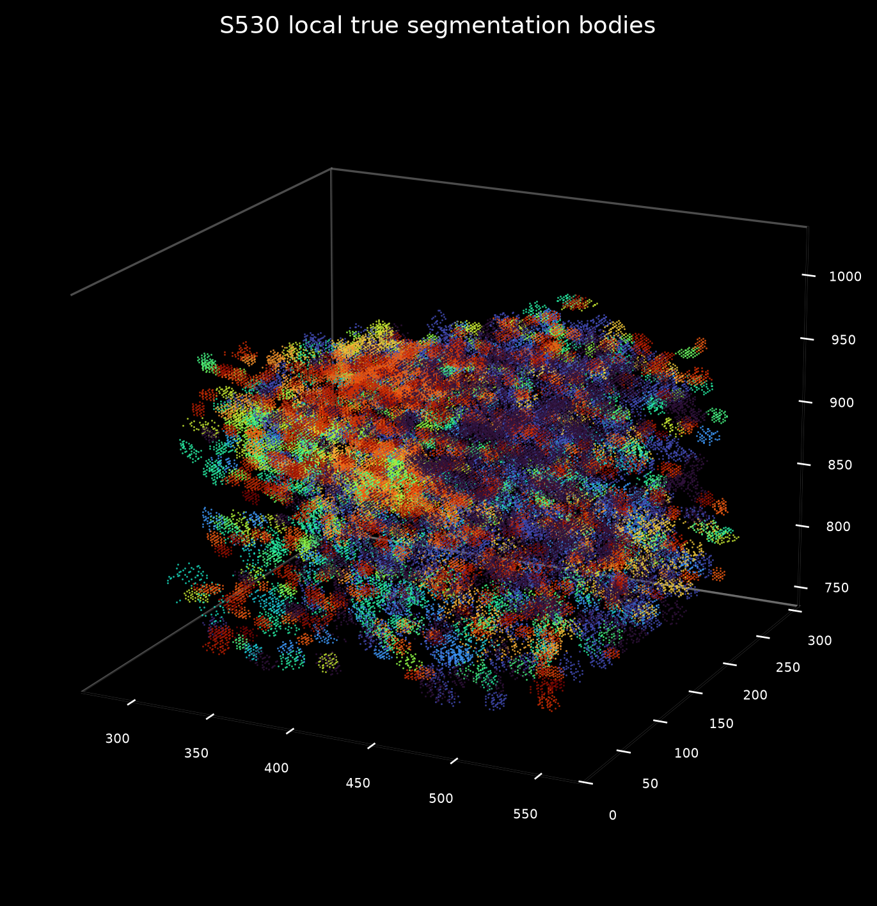
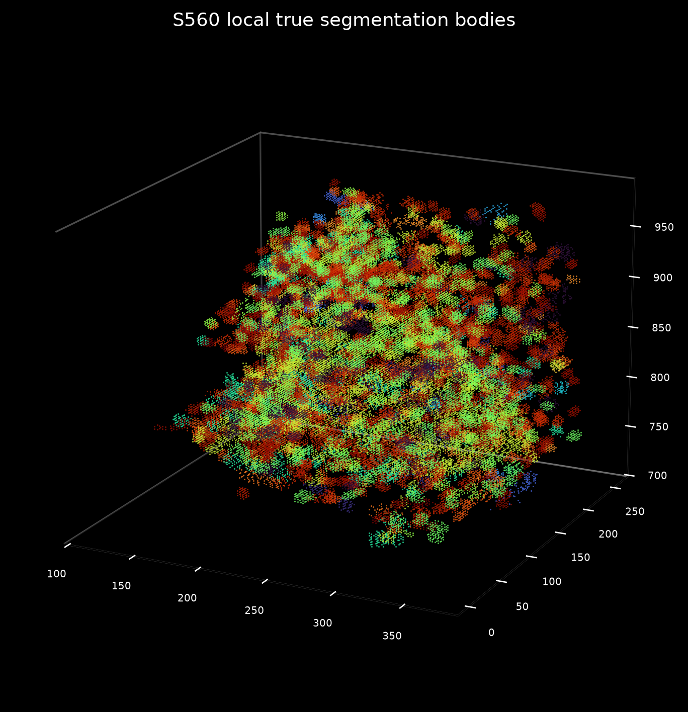

Fine26 UMAP

Stage943 expression · frozen Fine26 identities · Stage950–952 current integration
Fine26 remains frozen. Stage950 recomputes the current single-cell views from the Stage943 expression authority rather than re-clustering for versioning.


Tests transportability of the frozen 27-gene identities across S500/S530/S560.
One high-information local field is shown in each section, linking tissue position, Fine26 identity and the 27-gene single-cell state.
These three-section Fine26/broad spatial maps show selected medial periLC cells (not full-section class coverage). The XY display follows the same coordinate transform as the main gene atlas. Local multiplex scatter panels below have also been regenerated from source coordinates.


Stage951 restores true segmentation-body / maskbody rendering so the single-cell branch is not represented only by point centroids.





Stage952 connects the marker-guided region10 atlas to frozen Fine26 identity, morphology and residual within-cell-type spatial modulation.


Interpretation: spatial domain and molecular identity are complementary, not redundant. Region labels are section-local and are never assumed to be homologous across sections.
External Allen / MapMyCells correspondence and functional latent-state prediction remain downstream analyses. They are not used to define the current Fine26 identities or region10 boundaries.